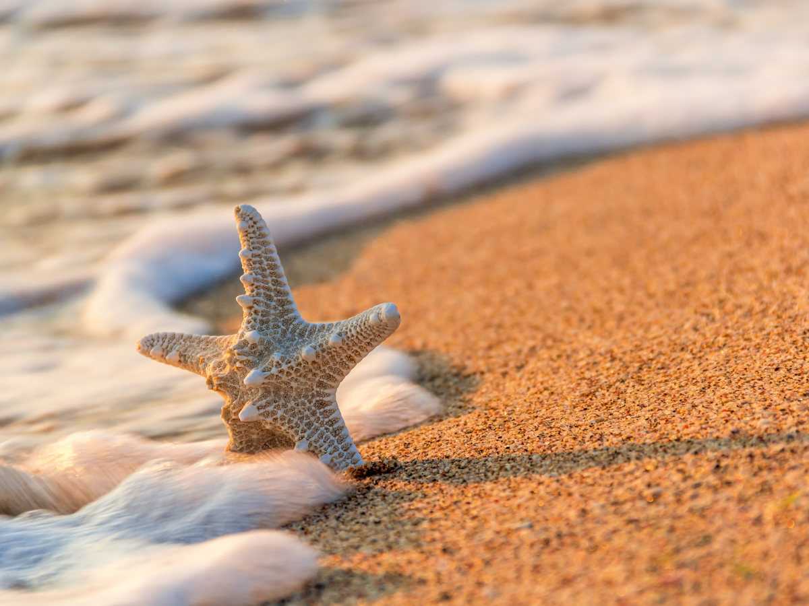

Beach vacations give us space to slow down, breathe deeply, and reconnect with ourselves and the people around us.
Whether it is the sound of the waves, the warmth of the sun, or the feeling of stepping away from everyday routines,
time by the water can be deeply restorative.
Here are five reasons beach vacations matter and why they continue to be one of the most refreshing ways to reset.
1. They Help Us Slow Down
There is something about the beach that naturally encourages us to pause.
The steady rhythm of the waves and the open space around us make it easier to let go of stress and simply be present.
2. They Create Space for Connection
Beach vacations often bring people together in simple, meaningful ways.
Whether it is a long walk, a shared meal, or a quiet conversation at sunset, these moments help deepen connection.
3. They Encourage Reflection
Being near the water can create a sense of calm that makes reflection come more naturally.
A beach trip can offer the mental space to think clearly, process emotions, and reset your perspective.
4. They Inspire Creativity

New environments often inspire fresh ideas, and the beach is full of beauty, color, and movement.
It can be the perfect setting for journaling, dreaming, brainstorming, or simply feeling inspired again.
5. They Remind Us to Enjoy the Moment
Beach vacations remind us that joy does not always have to be complicated.
Sometimes the best moments are the simplest ones: warm sand, ocean air, laughter, and the feeling of being fully present.